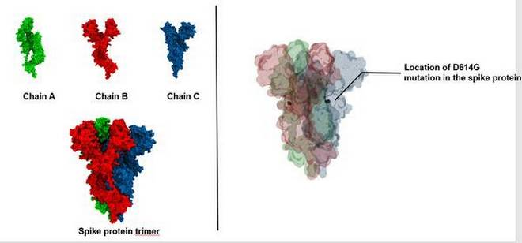

Explainer | What is the D614G mutation in coronavirus?
Sayan Ghosh
NEW DELHI, OCTOBER 30, 2020 20:28 IST
UPDATED: OCTOBER 31, 2020 11:02 IST
Mutation was seen in 78% of genomes sequenced from April 1 to May 18

Mutation was seen in 78% of genomes sequenced from April 1 to May 18
While novel coronavirus is undergoing many mutations, one particular mutation called D614G, according to
a study, has become the dominant variant in the global COVID-19 pandemic.
What is the D614G mutation?
When the virus enters an individual’s body, it aims at creating copies of itself. When it makes an error
in this copying process, we get a mutation.
In this case, the virus replaced the aspartic acid (D) in the 614th position of the amino acid with
glycine (G). Hence the mutation is called the D614G. This mutated form of the virus was first identified
in China and then in Europe. Later it spread to other countries like the U.S. and Canada and was
eventually reported in India.
The D614G mutation is situated in the spike protein of the virus. “You can think of the spike protein as
a massive ‘trimer’ assembly with three protein chains. Each protein chain has two sub-units (S1 and S2).
The sub-unit S1 is the one that attaches to the host cells — Human ACE2 receptor,” says Dr. Lipi
Thukral, Senior Scientist at CSIR-Institute of Genomics and Integrative Biology (IGIB) in an email to
The Hindu.
“The S2 sub-unit mediates the fusion of the viral and human membranes. The D614G mutation is present in
the sub-unit S1 of the protein and is also close to the S2 sub-unit. Therefore, it has an impact on the
human cell’s interactions with both S1 and S2,” she added.
“In simple words, this particular mutation aids the virus in attaching more efficiently with the ACE2
receptor in the human host, thereby making it more successful in entering a human body than its
predecessors,” explains Dr. Saumitra Das, Director of the National Institute of Biomedical Genomics in
West Bengal. To provide a clear picture of how transmissible this particular mutation of the virus has
become over time, a paper in the journal Cell says that the mutation was found in 10% of 997 global
genome sequences before March 1, 67% of sequences between March 1 and March 31 and 78% of the sequences
between April 1 and May 18.
A paper in the journal, Nature, after conducting experiments on hamsters, concluded that this particular
mutation may not reduce the ability of vaccines in clinical trials to protect against COVID-19 and that
the therapeutic antibodies should be tested against the circulating variant of the virus before clinical
development.
“There is a need for extreme caution with premature inferences on mutations and their effects without
supporting experimental evidence. This could result in a media frenzy and potentially undermine public
confidence in vaccines,” Dr. Raghunathan states.